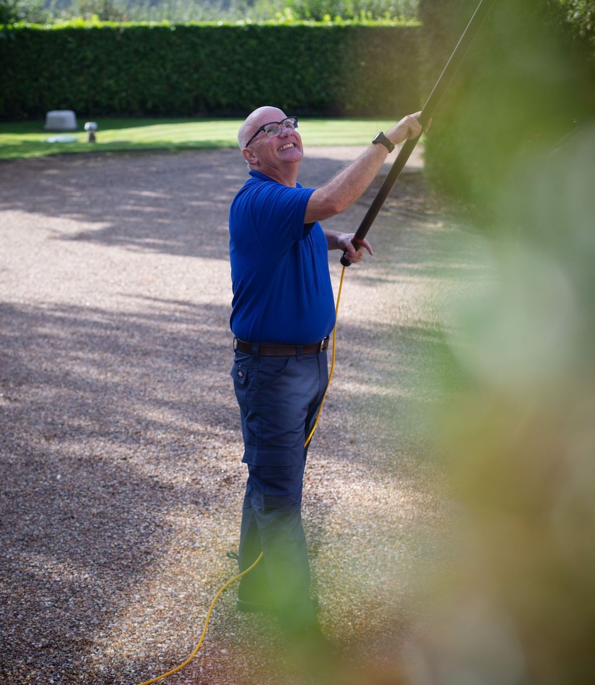

What we offer businesses
From charity shops and HMOs to offices, shops and multi-storey buildings, KAT Window Cleaning keeps your premises looking professional, on a schedule that works around you.
- Buildings of 3 storeys and above
- Full public liability insurance
- Regular contracts every 4 or 8 weeks, or one-off cleans
- Electronic invoicing, with online and cash payments accepted
- Free site visit, or a quote from photos
- Frames and sills cleaned every visit
Who we work with
Charities
Shops, offices and community premises kept clean and welcoming.
HMOs & landlords
Regular cleans for houses in multiple occupation and rental properties.
Shops & offices
A clean shop front and offices that make the right first impression.
Multi-storey buildings
All manner of commercial work, including buildings of 3 storeys and above.
“KAT Window Cleaning recently carried out some work for us on a large bespoke house project for Clayland Estates. Andrew was a true professional, and worked cleanly and efficiently. I would happily recommend KAT Window Cleaning to anyone.”
How it works
Four simple steps
1. Get in touch
Tell us what you need using the form, or give Andrew a call.
2. Get your quote
We can arrange a free visit, or you can simply send us photos of the property.
3. Book a date
Choose the services you'd like and we'll book a date that suits you.
4. Stay informed
You'll get a reminder the day before each clean, and a message when it's done.

Why choose KAT Window Cleaning?
- Over a decade of experience
- Trusted by local charities, landlords and businesses
- Flexible scheduling to suit your business
- 5.0 rating from 50+ Google reviews
Frequently asked questions
Can you clean buildings over 3 storeys?
Yes. KAT Window Cleaning handles all manner of commercial work, including buildings of 3 storeys and above. Get in touch with the details and we will advise.
Are you insured?
Yes, KAT Window Cleaning carries full public liability insurance.
Do you work with charities and HMO landlords?
Yes. We already look after charity premises and HMOs, as well as shops and offices.
How do invoicing and payment work?
We send electronic invoices, and accept online and cash payments.
How do I get a quote?
Use the commercial quote form, call 07932 008040, or send us photos of the building. We can also arrange a free site visit.
Areas we cover
Based in Watton, KAT Window Cleaning covers homes and businesses across south-west Norfolk:
- Watton
- Thetford
- Swaffham
- Attleborough
- Hingham
- Great Hockham
- and surrounding villages
Request a commercial quote
Fill in the form and Andrew will get back to you, or call 07932 008040.
Prefer to talk?
Covering Watton, Thetford, Swaffham, Attleborough, Hingham, Great Hockham and the surrounding villages.